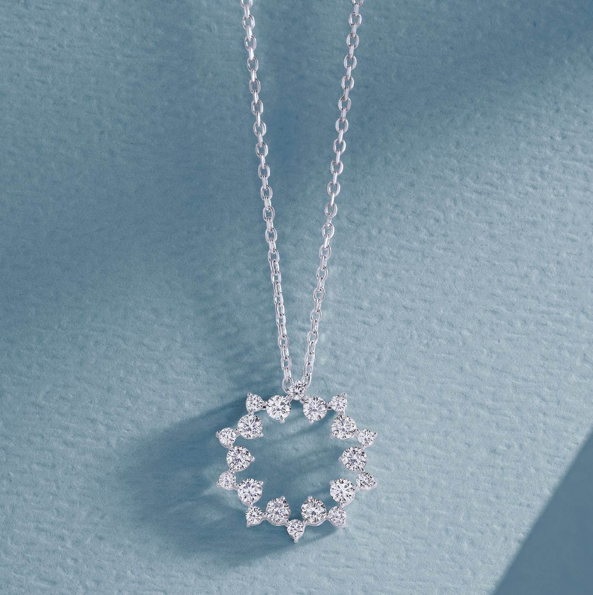
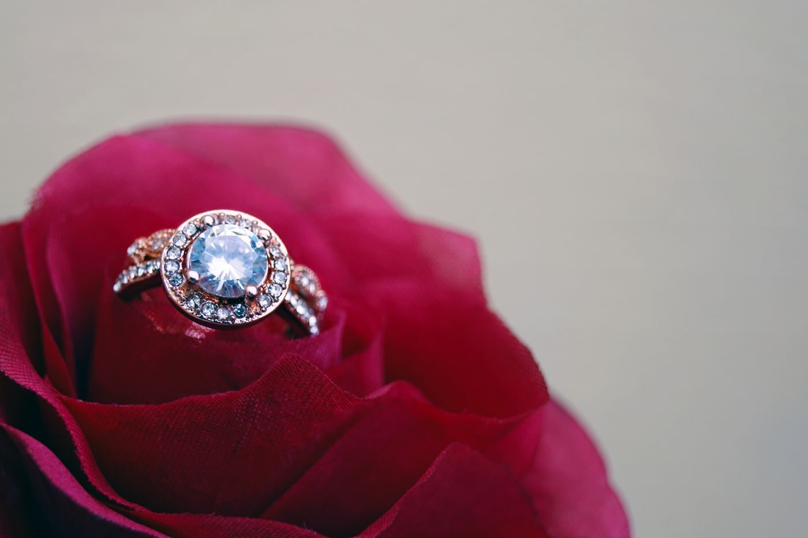

Turley Mfg. Jewelers
A family jewelry store in Evansville since 1948, with a master jeweler at the bench.
About
Turley Mfg. Jewelers is a family jewelry store in Evansville, in business since 1948. Master jeweler Bryan Turley has owned the store since 1998. The store offers custom jewelry design and casting, jewelry repair and refurbishing, watch repair, engagement rings, necklaces, and bracelets.
At the bench
Custom jewelry design and casting
Custom jewelry designed and cast in the store.
Jewelry repair and refurbishing
Jewelry repair and refurbishing.
Watch repair
Watch repair.
Engagement rings
Engagement rings.
Necklaces and bracelets
Necklaces and bracelets.
Since 1948
Turley Mfg. Jewelers is a family jewelry store in Evansville since 1948. Master jeweler Bryan Turley has owned the store since 1998. Call (812) 422-0531 to ask about a repair or a custom piece.
Gallery


All gallery photos are stock photos, labeled as such. They show jewelry, not this store's pieces.
Visit
Address: 14 NW 3rd St, Evansville, IN
Hours: Monday closed starting May 4, 2026. Tuesday to Friday 9:00 AM to 5:00 PM. Saturday and Sunday closed.
The hours on this page come from the own site. A place listing gives Monday to Friday 9:00 AM to 5:00 PM. The own-site hours are used.
Phone: (812) 422-0531
Contact
Turley Mfg. Jewelers serves Evansville, IN. Questions? Call (812) 422-0531.